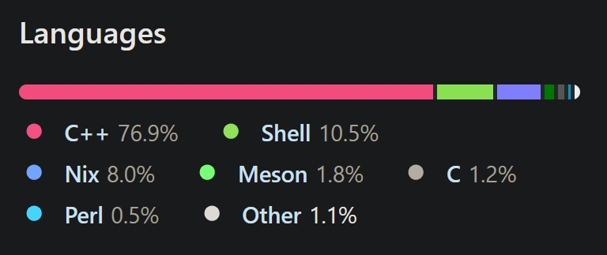

<style> .reveal { font-family: "Open Sans", "Helvetica Neue", Arial, sans-serif; line-height: 1.4; font-size: 24px; } .reveal .slides { width: 1300px !important; } .reveal h1, .reveal h2, .reveal h3 { letter-spacing: 0.5px; } li:not(:last-child) { margin-bottom: 16px; } </style> # Nix --- ## Background <ul> <li> Initial release: Jun 15 2003 by Eelco Dolstra </li> <li> Repository: https://www.github.com/NixOS/nix </li> <li> <div style="display: flex; align-items: center; gap: 12px;"> <span>Written in:</span>  </div> </li> <li> License: GNU Lesser General Public License, version 2.1 </li> <ul> --- ## Another package manager?? <ul> <li class="fragment"> <b>Functional builds</b>: Packages are treated as functions without side-effect > build output is determined solely by its inputs. </li> <li class="fragment"> <b>Multiple versions side-by-side</b>: Different versions or variants of a package get unique hashed paths. This avoids conflicts ("DLL hell") - you can have e.g. two versions of a library or compiler installed concurrently without interference. </li> <li class="fragment"> <b>Atomic upgrades & rollbacks</b>: Upgrades simply add new versions under new paths, so they're atomic and leave the old version intact. If an update breaks something, you can roll back into a previous generation. </li> <li class="fragment"> <b>Declarative, shareable environments</b>: Nix lets you declare exactly the list of tools and libraries you want, and reproduce that setup anywhere. You check your Nix expressions into version control, and any colleague (or CI system) can rebuild the same environment from that code. </li> <ul> --- ## Demo: Nix Flake with Clang ```nix { description = "Hello with Clang"; inputs.nixpkgs.url = "github:NixOS/nixpkgs/nixos-unstable"; outputs = { self, nixpkgs }: let pkgs = import nixpkgs { system = "x86_64-linux"; }; in { packages.x86_64-linux.hello = pkgs.stdenv.mkDerivation { name = "hello-clang"; src = ./. ; buildInputs = [ pkgs.clang ]; buildPhase = "clang -o hello hello.c"; installPhase = '' mkdir -p $out/bin cp hello $out/bin/ ''; }; }; } ``` --- ## The Nix Trinity <div style="display: flex; align-items: center;"> <img src="img/trinity.avif" width="500" style="margin-right: 20px;"> <ul> <li class="fragment"> <b>Nix Language (DSL)</b>: Functional language for build recipes. Every package or configuration is described as a Nix expression (also called derivation), ensuring deterministic, reproducible builds. A single language used for packages, shells, and even OS configs. </li> <li class="fragment"> <b>Nixpkgs</b>: Repository of Nix expressions for thousands of tools (over 120,000 packages). It includes multiple compilers (GCC, Clang, etc.), libraries, and utilities. Nixpkgs is updated continuously, and you can pin it (via flakes) to a commit for reproducibility. </li> <li class="fragment"> <b>NixOS</b>: Linux distribution built on Nix. Entire OS (kernel, services, config files) is specified in Nix. Atomically upgrade (and rollback) the whole system. System is reproducible - copy NixOS config to another machine to get an identical setup. </li> </ul> </div> --- ## Home Manager & Dev Experience <ul> <li class="fragment"> <b>Declarative user environments</b>: Home Manager lets you manage your home directory (dotfiles, programs, shell, editor settings, etc.) as Nix code. Replace ad-hoc scripts and manual installs with a single Nix config. Changes to your dev tools or dotfiles become simple edits in one place. </li> <li class="fragment"> <b>Reproducibility across machines</b>: Use Home Manager to implement a dotfiles repo. On a new machine you just install Nix, run Home Manager, and you have your exact environment (packages, Shell/Vim/IDE settings, etc.). </li> <li class="fragment"> <b>Flexibility</b>: Runs on Linux and macOS - Everyone can use it on their preferred platform. (Even on shared servers, each user can have their own Home Manager profile without needing root.) </li> </ul> --- ## Call to Action: Try Nix! <ul> <li> <b>Install Nix and experiment</b>:</br> <code> $ sh <(curl --proto '=https' --tlsv1.2 -L https://nixos.org/nix/install) --daemon </code> </li> <li> <b>Browse Nixpkgs</b>: over 120k packages are available (including many C toolchains, libraries, and tools). For most libraries or compilers you need, there's already a Nix expression ready to use (https://search.nixos.org/packages). </li> <li> <b>Use flakes and Home Manager</b>: Start your dotfiles repo today! </li> <li> <b>Get Nix installed on our servers</b>: multi-user safe (no one can overwrite the core system; each user has isolated profiles). Nix installs side-by-side with system packages and allows atomic upgrades/rollbacks, so the risk is low. </li> </ul> --- ## Sources & Further reading - https://en.wikipedia.org/wiki/Nix_(package_manager) - https://nixos.org/ - Build docker images using nix: https://xeiaso.net/talks/2024/nix-docker-build/ - Check out Home Manager: https://nixos.wiki/wiki/Home_Manager - Learn the Nix DSL: https://nixcloud.io/tour/?id=introduction/nix